28 course PDFs · 1426 pages · 40 figures · CC BY 4.0
Click any cover to open that course's PDF.
Semester One
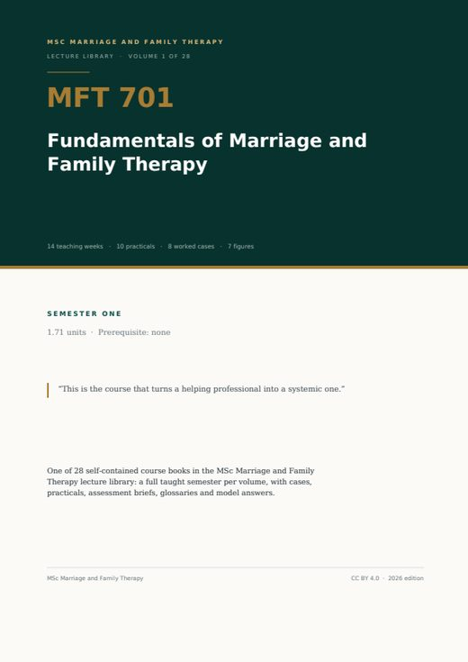
MFT 701
Fundamentals of Marriage and Family Therapy
MFT 702
Theories of Family Therapy
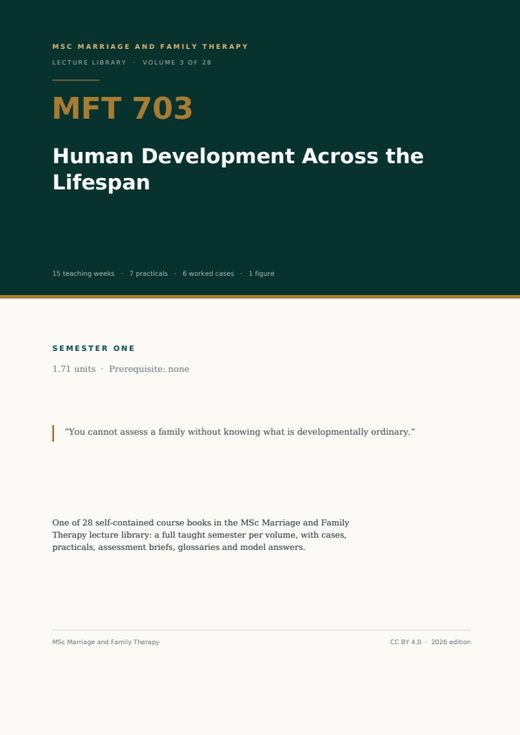
MFT 703
Human Development Across the Lifespan
MFT 704
Ethical and Legal Issues in Therapy
MFT 705
Research Methods in Marriage and Family Therapy
MFT 706
Clinical Practice and Techniques
MFT 707
Assessment and Diagnosis in Family Therapy
MFT 708
Cultural Competence in Therapy
Semester Two
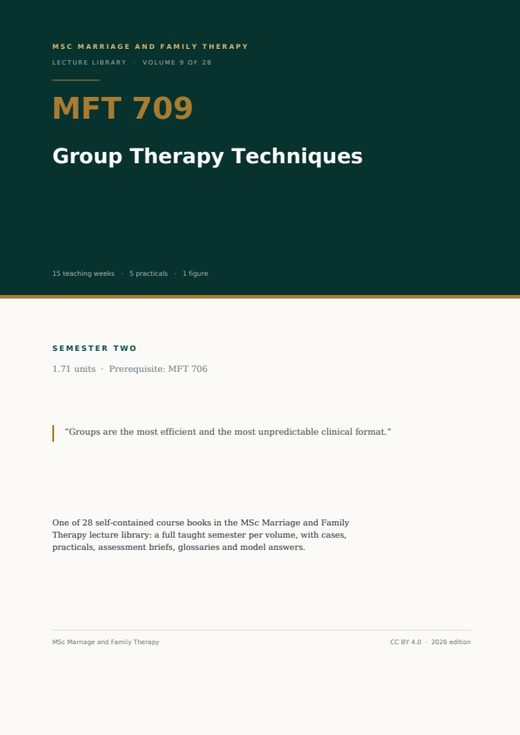
MFT 709
Group Therapy Techniques
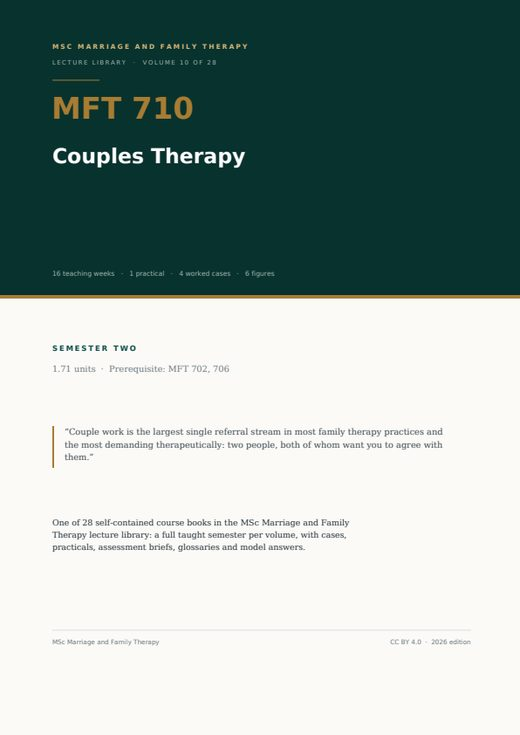
MFT 710
Couples Therapy
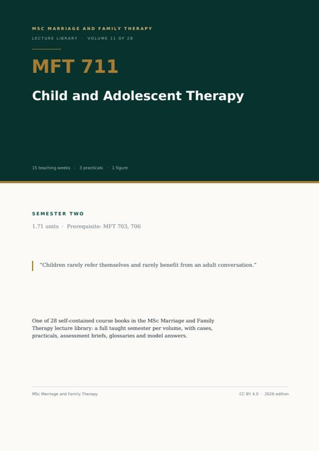
MFT 711
Child and Adolescent Therapy
MFT 712
Crisis Intervention Strategies
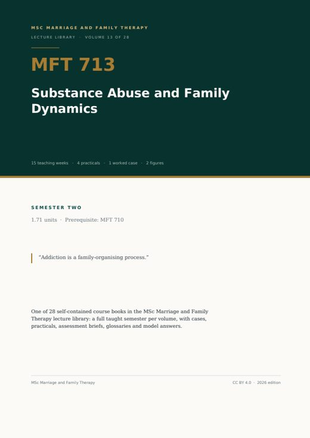
MFT 713
Substance Abuse and Family Dynamics
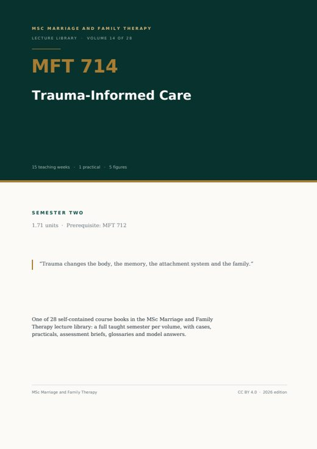
MFT 714
Trauma-Informed Care
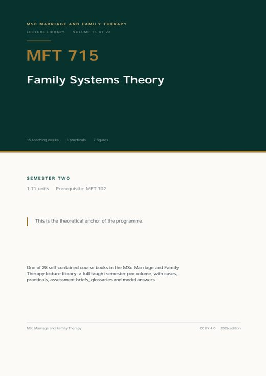
MFT 715
Family Systems Theory
Semester Three
MFT 716
Communication Skills in Therapy
MFT 717
Psychopathology in Families
MFT 718
Intimacy and Relationship Dynamics
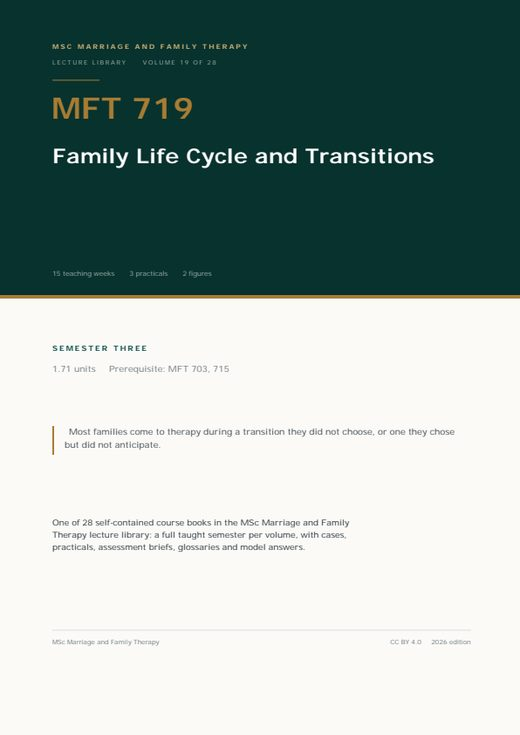
MFT 719
Family Life Cycle and Transitions
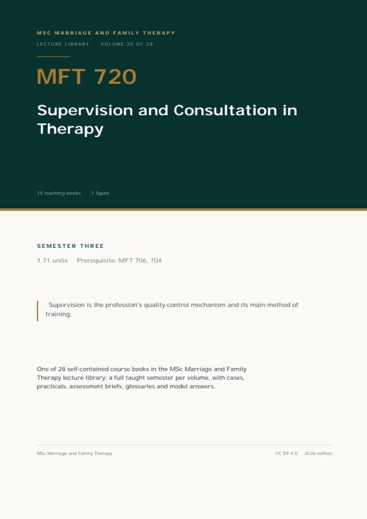
MFT 720
Supervision and Consultation in Therapy
MFT 721
Research Methodology
MFT 770
Master Thesis
Electives
MFT 722
Professional Development and Self-Care
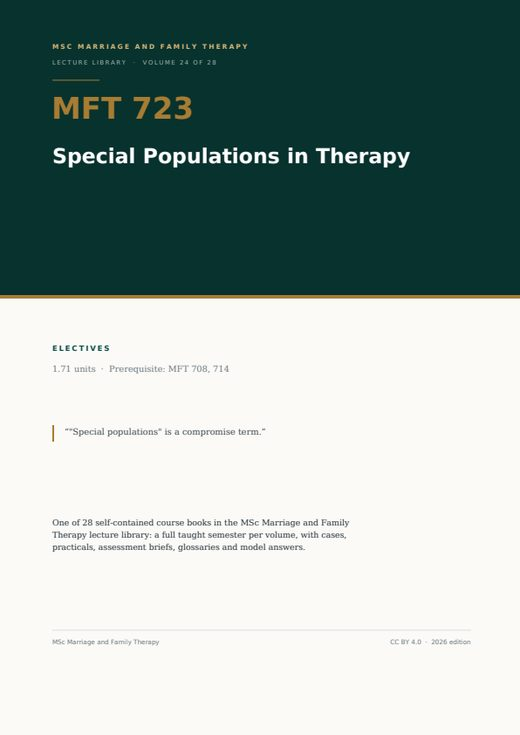
MFT 723
Special Populations in Therapy
MFT 724
Family Law and Advocacy
MFT 725
Integrative Approaches in Therapy
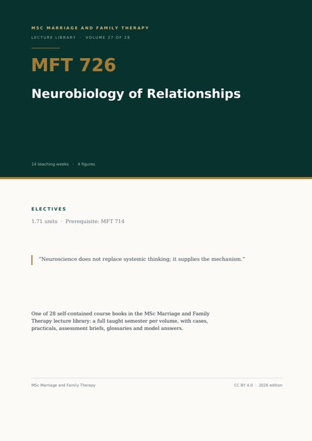
MFT 726
Neurobiology of Relationships
MFT 727
Play Therapy Techniques